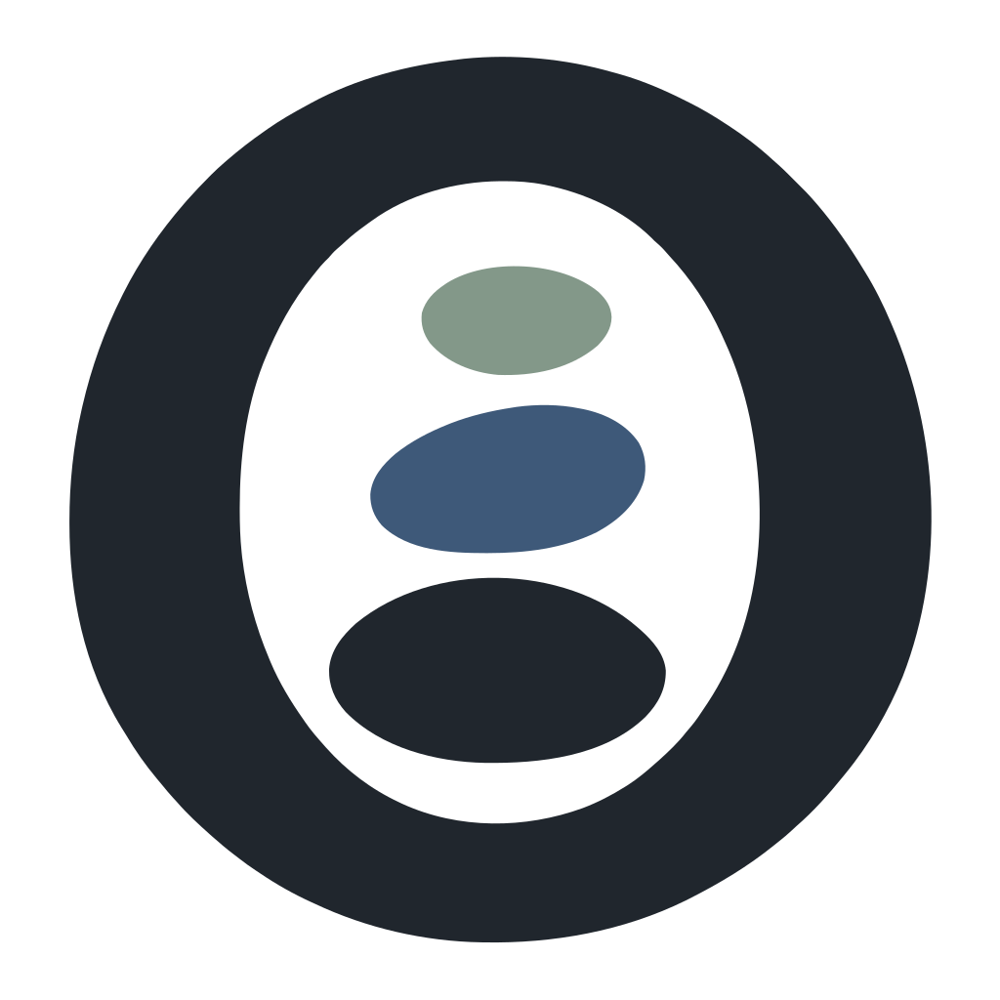

<!doctype html>
<html lang="en">
<meta charset="utf-8">
<meta name="viewport" content="width=device-width,initial-scale=1">
<title>Nordri assets</title>
<link rel="icon" type="image/svg+xml" href="../web/favicon.svg">
<style>
*{box-sizing:border-box}body{margin:0;background:#f5f2eb;color:#20262d;font:15px -apple-system,BlinkMacSystemFont,"Segoe UI",sans-serif}main{max-width:1100px;margin:auto;padding:44px 28px}h1{font-size:32px;letter-spacing:-1px;margin:0 0 8px}p{color:#59616b;line-height:1.5}h2{font-size:17px;margin-top:32px}.grid{display:grid;grid-template-columns:1fr 1fr;gap:18px}.card{background:#fff;border:1px solid #d8dde2;border-radius:14px;padding:25px}.dark{background:#20262d;color:#fff}.card small{display:block;margin-bottom:22px;color:#6c7580}.dark small{color:#b4becb}.wordmark{width:100%;height:94px;object-fit:contain}.symbol{height:180px;display:block;margin:auto}.sizes{display:flex;gap:25px;align-items:center;flex-wrap:wrap}.sizes div{text-align:center}.sizes label{display:block;font-size:11px;margin-top:12px;color:#6c7580}.tile{height:230px;display:block;margin:auto}.checker{background-color:#fff;background-image:linear-gradient(45deg,#e8e8e8 25%,transparent 25%),linear-gradient(-45deg,#e8e8e8 25%,transparent 25%),linear-gradient(45deg,transparent 75%,#e8e8e8 75%),linear-gradient(-45deg,transparent 75%,#e8e8e8 75%);background-size:20px 20px;background-position:0 0,0 10px,10px -10px,-10px 0}.tray img{width:22px;height:22px}.links{line-height:2}a{color:#3e5979}@media(max-width:700px){.grid{grid-template-columns:1fr}}
</style>
<main>
<h1>Nordri brand assets</h1><p>Logo 113 · app icon 134. Transparent artwork, platform containers, and web exports.</p>
<h2>Wordmark</h2><div class="grid"><div class="card"><small>On a light background</small></div><div class="card dark"><small>On a dark background</small></div></div>
<h2>Standalone mark and desktop tile</h2><div class="grid"><div class="card checker"><small>Transparent outside the mark and between the stones</small></div><div class="card"><small>White tile, transparent outside corners</small></div></div>
<h2>Favicons at actual pixel sizes</h2><div class="card sizes"><div><label>16 px</label></div><div><label>32 px</label></div><div><label>48 px</label></div><div><label>64 px</label></div><div><label>128 px</label></div></div>
<h2>Tray icons</h2><div class="grid tray"><div class="card"><small>Monochrome template, 22 px</small></div><div class="card dark"><small>White tray icon, 22 px</small></div></div>
<h2>Files</h2><div class="links"><a href="../desktop/windows/icon.ico">Windows ICO</a> · <a href="../desktop/macos/icon.icns">macOS ICNS</a> · <a href="../web/apple-touch-icon.png">Apple touch icon</a> · <a href="../social/og-image.jpg">Social preview</a> · <a href="../README.md">Usage guide</a></div>
</main>
</html>
